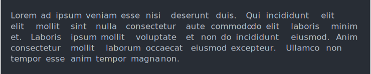
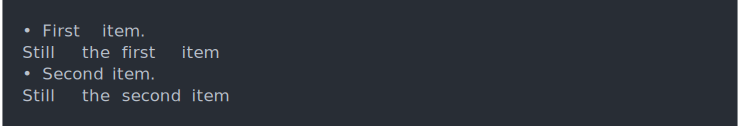

| cli_text {cli} | R Documentation |
Write some text to the screen. This function is most appropriate for
longer paragraphs. See cli_alert() for shorter status messages.
cli_text(..., .envir = parent.frame())
... |
The text to show, in character vectors. They will be concatenated into a single string. Newlines are not preserved. |
.envir |
Environment to evaluate the glue expressions in. |
Text is wrapped to the console width, see console_width().
cli_text(cli:::lorem_ipsum())

A cli_text() call always appends a newline character to the end.
cli_text("First line.")
cli_text("Second line.")
You can use inline markup, as usual.
cli_text("The {.fn cli_text} function in the {.pkg cli} package.")
String interpolation via glue works as usual. Interpolated vectors are collapsed.
pos <- c(5, 14, 25, 26)
cli_text("We have {length(pos)} missing measurements: {pos}.")
Use double braces to combine styling and string interpolation.
fun <- "cli-text"
pkg <- "cli"
cli_text("The {.fn {fun}} function in the {.pkg {pkg}} package.")
Arguments are concatenated.
cli_text(c("This ", "will ", "all "), "be ", "one ", "sentence.")
You can use cli_text() within cli containers.
ul <- cli_ul()
cli_li("First item.")
cli_text("Still the {.emph first} item")
cli_li("Second item.")
cli_text("Still the {.emph second} item")
cli_end(ul)
